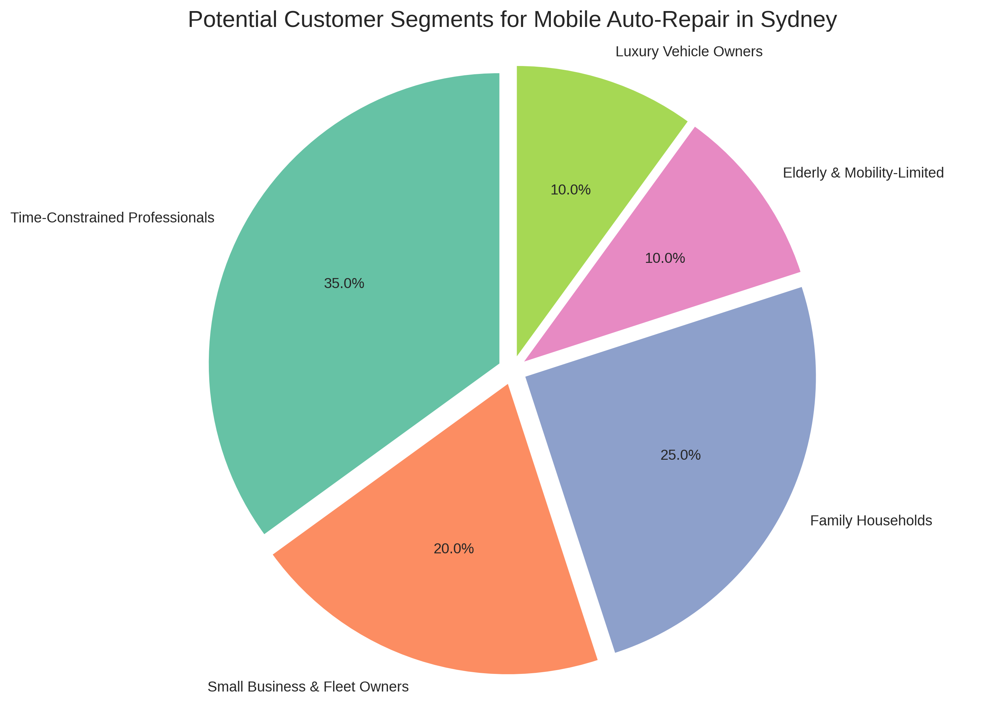
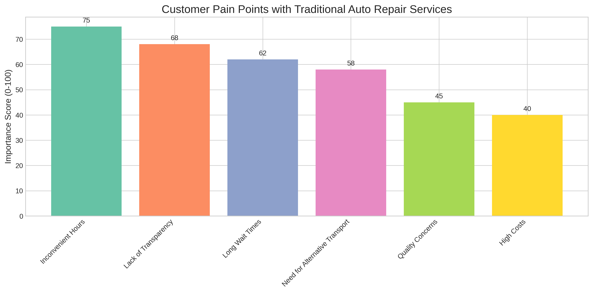

Customer Segments Analysis
Overview
This analysis identifies and examines key customer segments for a mobile auto-repair business in Sydney. Based on market research and demographic data, we've identified several promising customer segments, their needs, pain points, and preferences.

Breakdown of key customer segments for mobile auto-repair services
Key Customer Segments
1. Time-Constrained Professionals
Profile:
- Working professionals aged 25-45
- Middle to high income
- Own 1-2 vehicles
- Live in urban or near-urban areas
- Value time efficiency and convenience
Pain Points:
- Limited time to visit traditional repair shops
- Difficulty scheduling repairs during business hours
- Lost productivity while waiting for repairs
- Need for reliable transportation for work
Service Preferences:
- After-hours and weekend availability
- Booking flexibility
- Premium service options
- Digital communication and booking
Willingness to Pay:
- High willingness to pay premium for convenience
- Value transparent pricing over lowest cost
2. Small Business and Fleet Owners
Profile:
- Small to medium businesses with vehicle fleets
- Trades and service businesses
- Delivery and logistics companies
- Real estate agencies and property managers
Pain Points:
- Vehicle downtime impacts business operations
- Coordinating multiple vehicle maintenance schedules
- Traditional repair shops' limited business hours
- Need for consistent service quality across fleet
Service Preferences:
- Minimal business disruption
- On-site fleet servicing
- Preventative maintenance programs
- Consolidated billing and reporting
Willingness to Pay:
- Moderate to high for reduced downtime
- Value package deals for multiple vehicles
- Prioritize reliability and consistency
3. Family Households
Profile:
- Suburban families with 1-2 vehicles
- Parents with busy schedules
- Reliant on vehicles for daily activities
- Age range typically 30-50
Pain Points:
- Difficulty coordinating repair shop visits with family schedules
- Need for alternative transportation during repairs
- Concerns about repair costs and transparency
- Limited technical knowledge about repairs
Service Preferences:
- Weekend and evening availability
- At-home service while family is present
- Clear explanations of repairs needed
- Trustworthiness and safety
Willingness to Pay:
- Moderate premium for convenience
- Value packages for regular maintenance
- Appreciate financing options
4. Luxury and Performance Vehicle Owners
Profile:
- High-income individuals
- Owners of premium and luxury vehicles
- Typically aged 35-60
- Value quality and expertise
Pain Points:
- Concerns about technician expertise with high-end vehicles
- Desire for specialized knowledge and parts
- High expectations for service quality
- Limited trust in general repair shops
Service Preferences:
- Specialized knowledge of luxury brands
- Premium service experience
- Attention to detail
- Convenience and discretion
Willingness to Pay:
- High willingness to pay for expertise and convenience
- Less price-sensitive for quality service
- Value protection of vehicle investment
Customer Pain Points with Traditional Auto Repair

Key pain points experienced by customers with traditional auto repair services
What Customers Value Most in Mobile Repair Services
1. Convenience
- Service at preferred location (home, work, etc.)
- Flexible scheduling options
- No need for alternative transportation
- Time savings
2. Transparency
- Clear explanations of vehicle issues
- Upfront pricing
- Visual evidence of problems
- Options for different repair approaches
3. Quality Assurance
- Qualified, experienced technicians
- Quality parts and workmanship
- Warranties on repairs
- Follow-up service
4. Personalized Experience
- Direct communication with technician
- Customized service options
- Building ongoing relationship
- Tailored maintenance recommendations
Market Opportunity Analysis
High-Potential Segments
- Time-Constrained Professionals - Highest willingness to pay for convenience
- Small Business and Fleet Owners - Opportunity for recurring revenue
- Luxury Vehicle Owners - Higher margin services and specialized expertise
Underserved Needs
- After-hours and weekend service - Limited availability in current market
- Transparent, upfront pricing - Major pain point with traditional services
- Technology integration - Digital booking, status updates, and payment
Recommendations for Customer Acquisition
Targeting Strategy
- Primary Focus: Time-constrained professionals and small business owners
- Secondary Focus: Family households and luxury vehicle owners
- Tertiary Focus: Elderly and mobility-limited customers
Value Proposition Development
- Convenience: Emphasize time savings and location flexibility
- Transparency: Clear pricing and repair explanations
- Expertise: Qualified technicians and quality guarantees
- Technology: Modern booking and communication systems